Для запуска клиентского приложения на выполнение необходимо запустить файл «Chat.exe», на экране появится главное окно (рисунок 26). Пользователю предоставляется возможность ввести самостоятельно свое имя, после чего будет возможность подключиться к серверу. Адрес сервера (его ip в локальной сети), к которому подключаться, вводится пользователем самостоятельно возле надписи «IP:». Для облегчения ввода ip-адреса в строку ввода помещается ip-адрес текущего компьютера. Пользователю необходимо будет изменить всего лишь несколько цифр, чтобы подключиться к серверу.
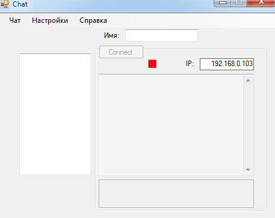
Рисунок 26 – Главное окно клиентского приложения
После введения имени пользователя, кнопка «Connect» станет активной (рисунок 27) и при нажатии на нее можно будет подключиться к серверу, адрес которого введен возле надписи «IP:»
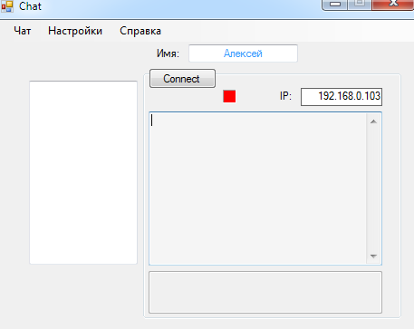
Рисунок 27 – Ввод имени пользователя
При установлении связи с сервером будет выведено соответсвующее сообщение и появится список пользователей, подключенных к серверу (рисунок 28). Также невозможно будет сменить имя пользователя, пока установлено подключение с сервером.
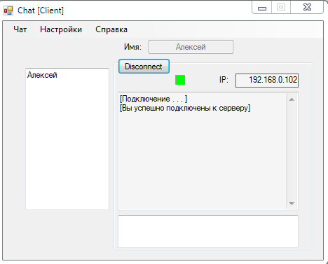
Рисунок 28 – Удачное подключение к серверу
При отсутствии связи с сервером пользователю будет предоставлена возможность еще раз попытаться подключиться, нажав на кнопку «Try again» (рисунок 29).
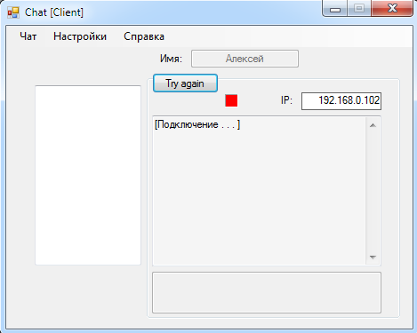
Рисунок 29 – Повторное подключение к серверу
После удачного подключения к серверу пользователь может начать отправку текстового сообщения всем пользователям, которые подключены к серверу. Ввод текстового сообщения осуществляется в нижней часте окна (рисунок 30).
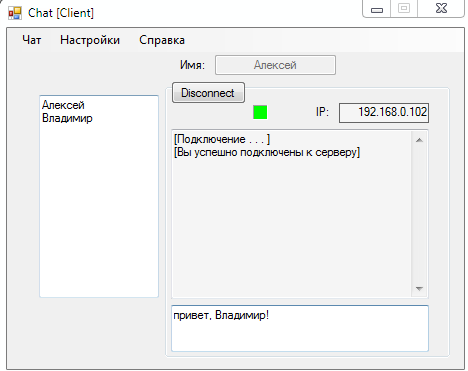
Рисунок 30 – Ввод текстового сообщения
Для отправки сообщения нужно нажать на клавиатуре клавишу «Enter». После чего в центре окна появится сообщение с именем отправителя (риснок 31) и такое же сообщение оно будет доставлено всем пользователям, которые подключены к серверу (рисунок 32).
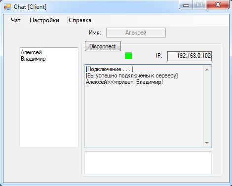
Рисунок 31 – Отправленное сообщение
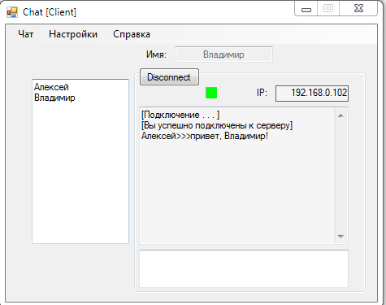
Рисунок 32 – Полученное сообщение
Для очистки всей переписки необходимо на панели меню нажать на «Чат» ---> «Очистить» (рисунок 33). Также в меню «Чат» доступно подменю «Выход», нажав на него будет произведено отключение от сервера, после чего приложение завершит свою работу и закроется.
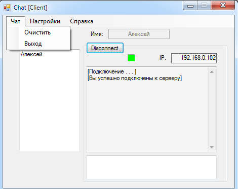
Рисунок 33 – Очистка всей переписки
После очистки переписки все отправленные и принятые сообщения будут полностью удалены (рисунок 34).
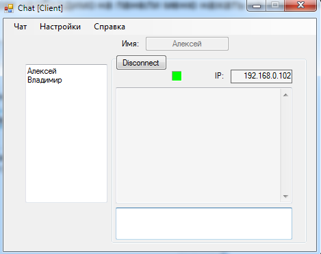
Рисунок 34 – Очистка всех сообщений
Для настроек приложения необходимо на панели меню нажать на «Настройки». После этого появится окно с настройками (рисунок 35). Все настройки при нажатии на кнопку «Сохранить» сохраняются в файлах parameters.xml и parameters1.xml (рисунок 36).
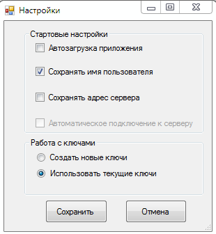
Рисунок 35 – Окно настроек
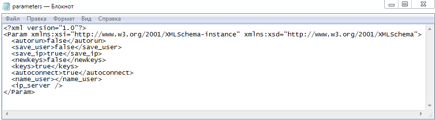
Рисунок 36 – Файл настроек
В окне настроек есть «Стартовые настройки» и «Работа с ключами». В «Стартовых настройках» есть 4 подпункта, которые можно активировать либо отключить:
«Автозагрузка приложения» - при включении компьютера автоматически запустится приложение;
«Сохранять имя пользователя» - при запуске приложения имя пользователя будет автоматически заполнено именем пользователя, который был введен при прошлом запуске.
«Сохранять адрес сервера» - при запуске приложения адрес сервера будет автоматически заполнен адресом, к которому был подключен пользователь во время предыдущего запуска.
«Автоматическое подключение к серверу» - при запуске приложения будет произведено сразу подключение к серверу. Можно активировать только при активированных настройках «Сохранять имя пользователя» и «Сохранять адрес сервера» (рисунок 37).
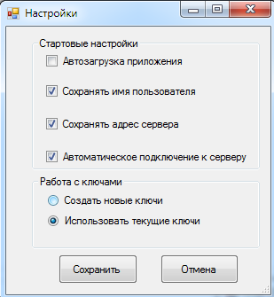
Рисунок 37 – Активация «Автоматическое подключение к серверу»
В «Работе с ключами» можно выбрать «Создать ключи» или «Использовать текущие ключи». Ключи используются для шифрования и расшифрования текстовых сообщений. Они хранятся в файлах public.xml (рисунок 38) и private.xml (рисунок 39).
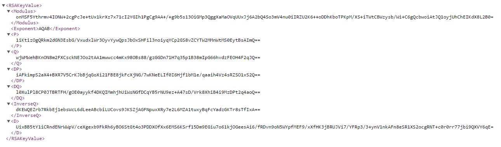
Рисунок 38 – Файл private.xml
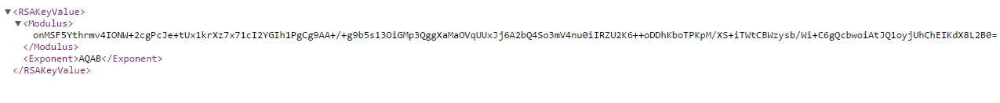
Рисунок 39 – Файл public.xtml
«Создать ключи» - при запуске приложения будут созданы новые ключи и сохранены в файлах public.xml и private.xml.
По умолчанию выбрано «Использовать текущие ключи».